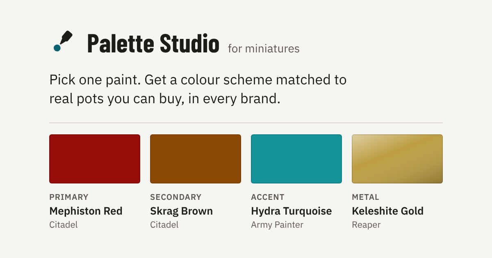

Design exploration · not shipped · 2026-10-29
Share as an image
The painter makes a picture of the scheme on the device and shares the picture with the link. No server makes or keeps the picture (CLAUDE.md §1).
Every colour and every paint name on this page comes from the real engine (data.js, scheme.js, harmony.js) on paints.json . The script mockups/share-image/engine-data.mjs writes that data. The images are real PNG files. This page draws them with <canvas> and the self-hosted fonts, as the app would. The sizes and times under each image are measured on your device.
Decided (Ryan, 2026-10-29), and built. Direction A. One square image (1080 × 1080): a wide image doubles the layout and the device tests and needs a choice of shape. The theme on screen. Copy image copies the image only, the way most apps do it: a paste takes one thing, and Copy link stays beside it. The static card fix goes in the same pull request as the image. Code: src/js/shareimage.js.
Recommendation (before the decision). Fix the static link card first: it is a small change, and every link needs it. Then build direction A, the recipe card, as one square image (1080 × 1080) in the theme on screen. Put it in ⋯ → Share this palette as Share image… on touch, and as Copy image and Save the image with a mouse. Keep direction C (the tone ladders) for a later, taller image. Directions B and C are in the questions at the end.
0. Why the link card is clipped on a Mac
The file is correct: src/og-image.png is 1200 × 630, and the tags in src/index.html say so. Messages on the Mac shows the card at a different shape. It cuts the sides off.
Measurement from your screenshot: the word mark "Palette Studio" is 386 px wide in the file and 224 px wide on screen. The scale is 0.58. The visible image is about 585 px wide, so it shows about 1008 px of the 1200 px file. That is an aspect ratio of about 1.6 : 1, not 1.91 : 1. Messages keeps the centre and cuts about 96 px from each side.
The card text starts at x = 80. So Messages cuts the first 16 px of every line ("ick one paint", "RIMARY"). The Metal swatch ends at x = 1120, so Messages cuts its right edge too.
Fix. Keep the size 1200 × 630: Discord, Slack and X use 1.91 : 1. Put all content inside the centre 960 px (a margin of 120 px each side). This gives 24 px of space inside the Mac crop. Keep the important content inside the centre 630 × 630 square too, because some apps show a square thumbnail. This is one PNG and one CHANGELOG line. It is a separate, small pull request.

4. How the image is drawn
The image is a <canvas> in vanilla JavaScript. There is no new runtime dependency (§6) and no external request.
- Layout is pure. A new module,
src/js/shareimage.js, gets the scheme, the size, the theme tokens and ameasure(font, text)function. It returns a list of draw operations (rectangles, swatches, text, tags, finish icons). It has no DOM, sonode --testcan test it with a fakemeasure. This page uses that design: seelayoutA,layoutBandlayoutCin its source. - Painting is small. A painter (about 120 lines) reads the operations and draws them on a canvas. It is the only part that touches the DOM. It lives in
app.js, or in a new app-injected module likewheel.js(§6 then names it). - Fonts load first. Before the draw, the painter calls
document.fonts.load()for each face that it uses (Barlow Condensed 700, IBM Plex Sans 400/500/600). The fonts are self-hosted, so this is local. If a font does not load, the draw uses the system font. The layout measures with the font that the canvas really has, so long text cannot overflow. - The image is a PNG.
canvas.toBlob(cb, 'image/png')makes the file. Flat colour compresses well in PNG, and PNG keeps the paint colour exact. JPEG would change the colour at the edges of each swatch. - Text is fitted, not shrunk. A name gets at most two lines, then an ellipsis (…). The full name goes in the alt text. A font size never goes below its minimum, so the image stays readable.
The share payload (sketch)
// in the click handler: the PNG is already made (see risk R1)
const file = new File([pngBlob], 'palette-studio-mephiston-red.png', { type: 'image/png' });
const data = { files: [file], title: 'Palette Studio for Miniatures', text: altText + '\n' + url };
if (navigator.canShare?.(data)) await navigator.share(data); // touch: the system share sheet
else showDesktopActions(); // Copy image · Save the image · Copy link
5. The share flow on each platform
Where the action lives
In ⋯, in the group Share this palette (§3.6). The group shares the colours on screen now, so an image belongs there. The rule for a pointer stays the same: the share sheet on touch only (CAN_SHARE), and direct actions with a mouse.
| Input | Today | Proposed | What it does |
|---|---|---|---|
| Touch | Share link… · Save the shopping list | Share image… · Share link… · Save the shopping list | Share image… opens the system share sheet with the PNG and the link. |
| Mouse | Copy link · Save the shopping list | Copy link · Copy image · Save the image · Save the shopping list | Copy image puts the PNG on the clipboard. Save the image downloads the PNG. Copy link is not changed. |
Words (§3.5, one name for one thing). "Image" is the one word for the picture: not "card", not "snapshot", not "picture". "Save" is already the word for a file (Save my shelf (CSV), Save the shopping list), so the download is Save the image, not "Download". The ellipsis on Share image… follows Share link…: it opens a sheet. The toast after Copy image says "Image copied." Code names: shareImage, copyImage, saveImage.
Touch: Web Share API Level 2
- Make the PNG before the tap (when ⋯ opens). See risk R1.
- In the tap handler, call
navigator.canShare({ files: [file] }). - If it is true, call
navigator.share({ files, title, text }). Put the link intext. Some share targets dropurlwhen there is a file (verify on device). - If it is false, show the mouse actions (Save the image, Copy link).
- If the painter closes the sheet (
AbortError), do nothing and say nothing.
Desktop, or a browser with no file share
- Copy image: call
navigator.clipboard.write([new ClipboardItem({ 'image/png': pngPromise })]). Give Safari a promise of the blob in the click, not the blob after anawait. Safari needs the write to start inside the click. - The clipboard holds one thing for a paste. An app that gets an image paste takes the image and drops any text. So Copy image copies the image only. The image prints the address, and Copy link stays beside it. (Question 4.)
- Save the image: the same
download()path as Save the shopping list (an<a download>with an object URL). - If
ClipboardItemis not there, or the write fails, hide Copy image and keep Save the image.
The native app (docs/IOS_APP_PLAN.md, CLAUDE_NATIVE.md)
- Try
navigator.sharewith the file first. CLAUDE_NATIVE.md §4 allows@capacitor/share"only ifnavigator.shareproves insufficient in-shell". Test this at Stage 1. - If the plugin is necessary:
Share.share()takesfilesas file paths, not a Blob. So the app must write the PNG to the cache folder first. That needs@capacitor/filesystem, which is not on the allowlist. It needs a line in CLAUDE_NATIVE.md §4 and a row in the §3 divergence registry, in the same commit. - "Open in Palette Studio": the link in the share is the same web link. With a Universal Link (an
apple-app-site-associationfile atpalette.ryanmette.com/.well-known/, a static file on GitHub Pages), iOS opens the link in the app when the app is installed, and on the web when it is not. There is no second link and no new server.
6. Risks and limits
| # | Risk | What we do |
|---|---|---|
| R1 | iOS Safari and file share. share() needs a recent tap (transient user activation). An await for fonts and toBlob in the tap can use up that time, and Safari then rejects with NotAllowedError. | Make the PNG before the tap: when ⋯ opens, and again after a scheme change while ⋯ is open. The tap then calls share() at once. Test on a real iPhone. |
| R2 | Files and a link together. Some share targets keep the file and drop the link, or the other way. | Put the link in text. The image also prints the address. Test: Messages, WhatsApp, Discord, Instagram, Mail, Save to Photos. |
| R3 | Image size and share-sheet limits. | The measured PNG sizes on this page are about …. That is far under any share or message limit. Messages can compress a sent image. Flat colour survives that well. |
| R4 | Fonts not ready on the first draw. A canvas does not wait for a font. A draw before the font loads uses the fallback. | Await document.fonts.load() for each face. Measure with the real font. If the load fails, draw with the system font (the layout still fits). |
| R5 | Very long paint names. The longest in the data has 49 characters. | Two lines, then an ellipsis. The full name goes in the alt text. See the "very long name" scheme in the menu. |
| R6 | Neutral seeds. Black, white and grey have no hue. The wheel cannot place them on the ring. | A and C do not show the wheel. B puts a neutral at the centre and draws the disc at a fixed 50% lightness, so the hues show. See "Abaddon Black". |
| R7 | Harmonies with 5 colours (square, tetradic, compound, shades: base + 3 or 4 + Metal). | A and C show the four roles (the recipe). B shows every column of the live palette. A colour with no role shows its hue step ("+90°"), as the live palette does. See "Caliban Green · square". |
| R8 | The link carries the theme (t=dark, from shareUrl). | The image uses the theme on screen, and the link opens in that theme too, so they agree. The static link card stays light. (Question 3.) |
| R9 | A slow phone (§6: first render under 100 ms). | The image is not part of the render. It is made only when ⋯ opens. The draw times on this page: …. A slow phone can be about 4 to 6 times slower (estimate, verify). That is still a short wait, and the painter is not dragging at that time. |
| R10 | Alt text. The Web Share API has no alt field for a file. Messages and Discord do not take one from the share sheet. | Put a short text summary of the scheme in text with the link. The full alt text is under each image on this page. |
| R11 | Small text in a message bubble. Messages shows a square image at about 240 px wide on a phone. 1080 px of image then shows at 0.22 scale. | Big type for the names, and the table under each direction gives the smallest text size as shown. A tap opens the image full screen. |
| R12 | The link unfurls twice. In Messages and Discord, the link in the text gets its own static card under the image. | This is why the static card fix comes first. A per-scheme card still needs a server (§1). |
7. Estimate
Files
| File | Change | Size |
|---|---|---|
src/og-image.png | Redraw with a 120 px side margin. | 1 file |
src/js/shareimage.js (new) | Pure: layoutShareImage(view, size, tokens, measure) → operations, shareAlt(view), shareFileName(view), fitText(). | ~250 lines |
test/shareimage.test.js (new) | Fit and ellipsis, two-line names, every text inside the safe zone, the minimum font sizes, textOn on every swatch label, the alt text for 4 and 5 colours and a neutral seed, the file name. | ~150 lines |
src/js/app.js | The view from currentScheme(), the painter, the font gate, make-on-open, and the three actions. | ~160 lines |
src/index.html | The new buttons in ⋯ → Share this palette. | ~6 lines |
src/js/i18n.js | Button names, toasts, the role words in the image, the alt text template (en-US: "color"). | ~15 lines |
src/sw.js | Bump CACHE, add shareimage.js to the shell (§8). | 2 lines |
CLAUDE.md | §3.5 the word table (image, Share image…, Copy image, Save the image) · §3.6 the ⋯ group 2 · §4 the tree (the new module and test; the og card line says "inside a 960 px safe zone") · §6 the module list, if the painter is its own module · §1 "Added in v1.x". | — |
| Docs | CHANGELOG.md, docs/USE_CASES.md UC-13, README.md, docs/PLAN.md. | — |
Commit plan (one concern per commit, §8)
fix(og): keep the link card inside the Messages crop— the PNG, CHANGELOG, the §4 tree line. (Its own pull request.)feat(shareimage): lay out the recipe image— the pure module and its tests, the §4 tree.feat(share): draw the image on a canvas— the painter and the font gate inapp.js, §6 if needed.feat(settings): Share image…, Copy image and Save the image—index.html,i18n.js, the flows, CLAUDE.md §3.5 and §3.6, USE_CASES UC-13, README, CHANGELOG.chore(sw): bump the cache for the share image.
CLAUDE.md changes go in the same commit as the code they describe (the header of CLAUDE.md, and §8). The release is a minor bump (1.12.0), not 2.0 (§8).
8. Recommendation and questions
Recommendation. First, fix the static card (commit 1). Then build direction A as one square PNG in the theme on screen. A shows Priya's plan with names that you can read in a bubble. It is honest (a target band over each pot, ΔE with its label). It also works for 5-colour schemes and neutral seeds without special cases.
- Direction. Is A (the recipe card) correct for v1? Or do you want B (the wheel) for Sam, who explores?
- Format. One square image (1080 × 1080) for every app? Or also the wide image (1200 × 630) with a mouse, for Discord and Slack? A square shows well in Discord too, at about 300 × 300.
- Theme. Does the image use the theme on screen (dark when the app is dark)? Or is it always light, the same as the static link card?
- Copy with a mouse. Copy image copies the image only, and Copy link stays beside it. Is that correct? Or do you want one ClipboardItem with both the image and the link (a paste then gets only one of them, and the app chooses which)?
- The static card. Can I make the static card fix (commit 1) now, as its own small pull request?
Sources and what to verify
- The Mac crop: measured from your screenshot (scale 0.58, about 1008 of 1200 px). Verify on iPhone Messages too.
- Web Share API Level 2 (
canShare,files, user activation): W3C Web Share API, w3c.github.io/web-share. WebKit's work on Level 2: WebKit bug 198606. Guide: web.dev/articles/web-share. - ClipboardItem with a promise: W3C Clipboard API and WebKit: Async Clipboard API.
- Capacitor Share and Filesystem: capacitorjs.com/docs/apis/share, capacitorjs.com/docs/apis/filesystem.
- Rich links in Messages: Apple TN3156.
- The session that made this page could not open the W3C, MDN, Capacitor and Apple pages (network policy). Read them before the build. Each "verify" on this page is a device test.